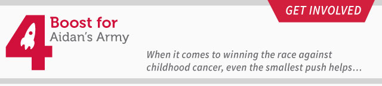
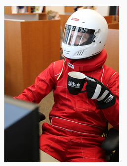
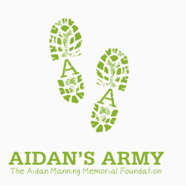
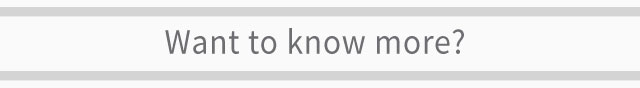
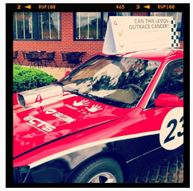

|  |

Yes, I'm in a racing suit...Why the in the hell am I in a racing suit? I'm participating in the 24 Hours of Lemons Car Race this weekend at the Joliet Autobahn Country Club race track. Me and my fellow Boost4 team members are doing this race to raise money for the Adian's Army Memorial Foundation. A foundation which is dedicated to advancing the research and treatment of childhood cancers like Medulloblastoma � the kind of brain tumor 3-year-old Aidan Manning lost his battle with. But I need your help!Time is running short for us to get as many donations as we can for our charity, Boost4! - Any amount helps! I'm normally not the one to ask for money, but this is a damn good cause. And I wouldn't be sending this to you if I didn't think it wouldn't matter...but it does. If not today, then think about it tomorrow... |
| 
Although Aidan Manning did not get the chance to live a long life, his courage, bravery and strength continue to inspire us everyday. Aidan�s Army is dedicated to advancing research and treatment of childhood medulloblastoma, while providing children with the most sophisticated treatments available. 100% of the donations the Boost4 team receives through this effort will go to Aidan�s Army memorial foundation - Plain and Simple. Visit the Aidian's Army website to learn more about the story of Adian, the foundation, and the cause behind it: aidansarmy.org |
|  |
| 
If you want to know more about the Boost4 charity, the race, Aidan's Army, or anything else, feel free to visit: Boost4.org You'll be able to read more about the cause behind the charity, the 24 Hours of Lemons race, and our car (which will be interesting to see how long it will last and hopefully WILL NOT burst into flames). My sincerest thanks to you for taking the time to dontate to this cause! - Scotty D. |